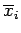

Absoluter und relativer Maximalfehler
- 1. Absoluter Maximalfehler:
- Ist die zu bestimmende Größe z eine Funktion der Meßgrößen , d.h. , dann muß der resultierende absolute Fehler unter Berücksichtigung dieser Funktion berechnet werden. Das geschieht entweder mit Hilfe des Fehlerfortpflanzungsgesetzes, wodurch ein Ausgleich der Messungen vorgenommen wird, weil nach der Fehlerquadratmethode ein Minimum von gesucht wird, oder man verzichtet auf den Ausgleich der Meßwerte und berechnet lediglich eine obere Fehlerschranke, die absoluter Maximalfehler genannt wird. Für den Fall, daß es sich um n unabhängige Veränderliche xi handelt, gilt:
wobei für die xi der jeweilige Mittelwert  einzusetzen ist.
- 2. Relativer Maximalfehler:
- Der relative Maximalfehler wird gebildet, indem der absolute Maximalfehler durch den Zahlenwert der Meßgröße (meist ist das der Mittelwert z) dividiert wird: